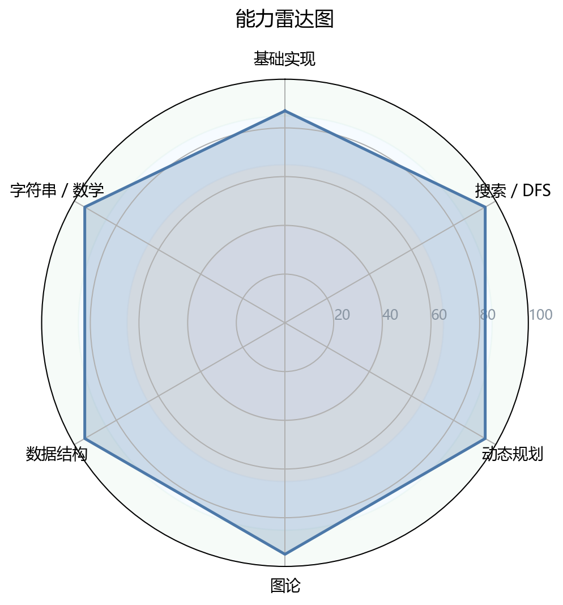
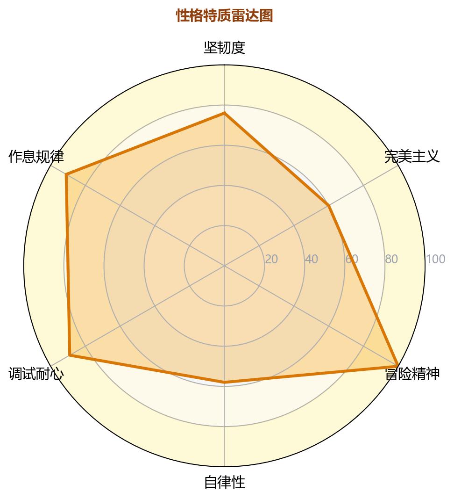
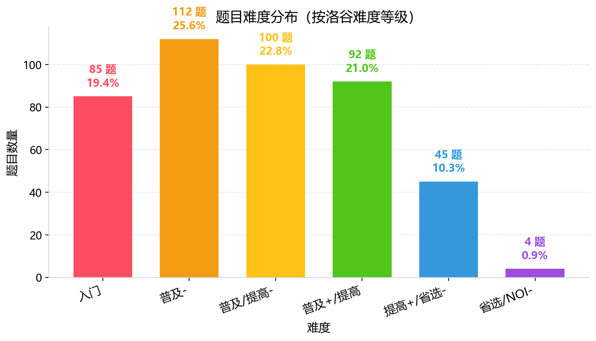
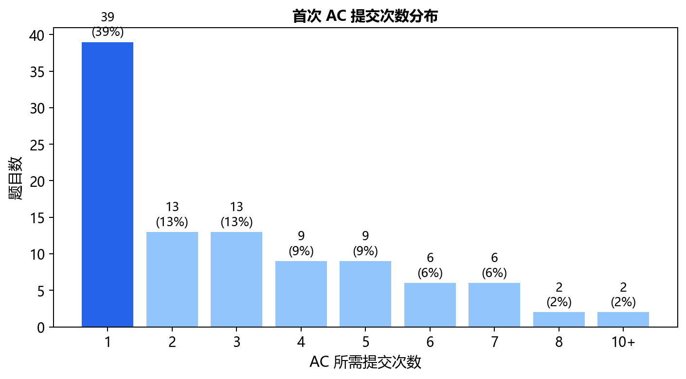
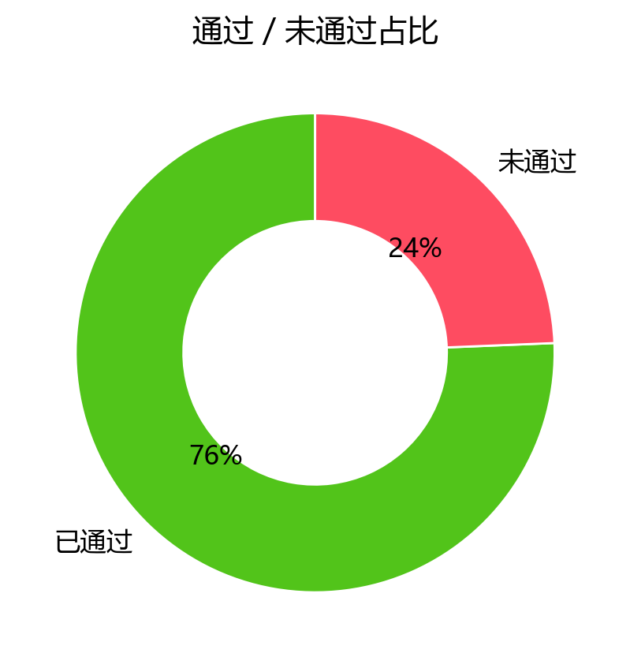
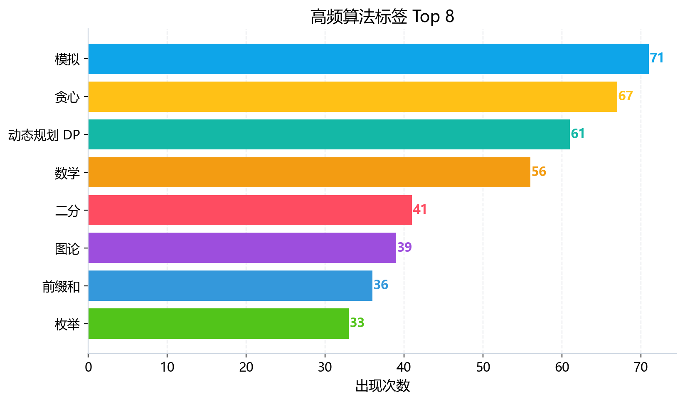

图 1：能力雷达图

图 2：性格画像雷达图

图 3：题目难度分布

图 4：首次 AC 提交次数分布

图 5：通过/未通过占比

图 6：高频算法标签 Top 8
| 洛谷难度 | 题数 | 占比 | 分布图 |
|---|---|---|---|
| 入门 | 85 | 19.4% | 19.4% |
| 普及- | 112 | 25.6% | 25.6% |
| 普及/提高- | 100 | 22.8% | 22.8% |
| 普及+/提高 | 92 | 21.0% | 21.0% |
| 提高+/省选- | 45 | 10.3% | 10.3% |
| 省选/NOI- | 4 | 0.9% | 0.9% |
| NOI/NOI+/CTSC | 0 | 0.0% | 0.0% |
| 级别 | 已覆盖/总数 | 覆盖率 | 详细情况 |
|---|---|---|---|
| 入门 | 22/28 | 78.6% | 🟢9项 🟡5项 🟠6项 🔵2项 🔴6项 |
| 提高 | 27/50 | 54.0% | 🟢4项 🟡1项 🟠12项 🔵10项 🔴23项 |
| 省选 | 7/10 | 70.0% | 🟢0项 🟡1项 🟠2项 🔵4项 🔴3项 |
| NOI | 11/43 | 25.6% | 🟢0项 🟡0项 🟠5项 🔵6项 🔴32项 |
好的，选手，很高兴能有这次机会与你进行一次深度的交流。我是你的算法教练。我们一起来分析一下这份报告，这不仅仅是一份成绩单，更是一份通往更高水平的路线图。请把这次诊断看作一次“会诊”，我们来一起找到你的优势，并铲平前进路上的绊脚石。
根据你的提交数据，我看到的是一位充满激情、勇于挑战但稍欠耐心的“独行侠”。
| 特质 | 评分 | 数据支撑 | 拟人化评价 |
|---|---|---|---|
| 坚韧度 | ★★★★★5/5 | 提交500次，独立尝试152题，卡题10道仍不放弃，如 P13977 提交12次。 |
就像一位在沙漠中独自跋涉的旅人，即使迷路，也绝不退缩。 |
| 完美主义 | ★★★★★4/5 | 一次AC率仅25.7%，但很多题目AC前都经过了反复调试，说明你渴望完全拿下每一题。 | 你是一位追求极致细节的工匠，不允许作品存在瑕疵。 |
| 冒险精神 | ★★★★★5/5 | 最大难点等级超过当前实力：你刷过的题中，最高难度达到了省选/NOI-（紫色），并且有4道通过记录。这证明你敢于挑战远超当前阶段的题目。 | 你是初生牛犊不怕虎的探险家，总想征服最高的山峰。 |
| 自律性 | ★★★★★4/5 | 活跃天数91天，工作日提交量（358次）远超周末（142次），说明你很好地平衡了学业与训练。 | 你像一位严谨的上班族，有着固定的训练日程。 |
| 调试耐心 | ★★★★★3/5 | WA后重交间隔中位数为270秒，且有14%的提交在1分钟内快速重交。 | 调试时像一位急性子的医生，急于看到药效，但有时需要“望闻问切”更久一些。 |
| 作息规律 | ★★★★★4/5 | 提交集中在下午（13-20点），凌晨没有提交记录，作息相对健康。 | 一位早睡早起的“养生型”选手，懂得保持精力。 |
解读：你的性格是典型的“攻坚型”选手，不畏惧难题，有很强的韧性。但“死磕”不等于高效，你需要学会放弃，学会从暴力到正解的推导，而不是“蒙”对答案。
| 题号 | 题目名称 | 提交次数 | 失败原因分析（AI诊断） |
|---|---|---|---|
| P13977 | 数列分块入门 2 | 12次 (未AC) | 分块边界处理失误，可能没搞懂块内有序化和暴力查询的平衡。 |
| P5767 | [NOI1997] 最优乘车 | 11次 (未AC) | 建图模型有问题：没把“同一线路上的站点”抽象成“一条边权为0的链”，导致图论建模错误。 |
| P10403 | 「XSOI-R1」跳跃游戏 | 9次 (未AC) | 可能陷入贪心或暴力DP困境，未能发现倍增或动态规划优化的规律。 |
| P4683 | [IOI 2008] Type Printer | 8次 (未AC) | 打印机问题，核心是Trie树的DFS遍历，可能没想明白如何利用DFS序和最后一个单词。 |
| P7497 | 四方喝彩 | 8次 (未AC) | 线段树多标记下传问题，多个懒标记的优先级、合并和清零逻辑混乱。 |
特征：你卡住的题，往往不是完全不会，而是**模型建立不准确**（如最优乘车）或**基础数据结构的细节处理不到位**（如数列分块、线段树）。你缺乏从“暴力”到“正解”的路径，常在“优化”这一步卡住。
P5767 和 P13977 这类题耗时极长，说明你愿意花时间，但效率需要提升。学会适时看题解，学习更优的模型，比死磕10次更有价值。结论：你是一位稳固在 **CSP-S（提高级）** 水平，具备冲击 **省选** 潜力的选手。但目前在“省选-”级别存在明显的瓶颈区，表现为模型建立能力和高级数据结构的细节处理是短板。
| 能力块 | 评分 | 当前等级 | 数据证据 | 已经具备 |
|---|---|---|---|---|
| 基础算法 | 90 | 🟢 精通 | 贪心(67题)、二分(41题)、枚举(33题)数量极多，且子集反悔贪心等技巧已尝试。 | 扎实的算法基础，能解决大部分省级以下问题。 |
| 数据结构 | 90 | 🟢 精通 | 线段树(27题)、树状数组(22题)、并查集(26题)数量巨大，甚至尝试了LCT(1题)。 | 熟练掌握多数核心数据结构，能进行复杂维护。 |
| 图论 | 90 | 🟢 精通 | 最短路(24题)、生成树(16题)、二分图(7题)、Tarjan(8题)等核心算法题量充沛。 | 图论建模和经典算法很熟练。 |
| 动态规划 | 90 | 🟢 精通 | DP(61题)为最爱的标签之一，涵盖背包、树形DP、状压DP、斜率优化等。 | DP能力是你最强的武器之一，能解决复杂状态。 |
| 字符串 | 90 | 🟢 精通 | 字符串(31题)、Trie(9题)、KMP(2题)都有涉及，甚至接触了后缀数组(1题)。 | 字符串基础扎实，但高级自动机是空白。 |
| 数学 | 90 | 🟢 精通 | 数学(56题)、组合数(4题)、逆元(5题)、高斯消元(2题)等均有涉猎。 | 数学基础很好，组合数学初窥门径。 |
诊断：你的六维非常均衡且强大，几乎没有明显拖后腿的维度。这在CSP-S级别的选手中是顶级配置。你的瓶颈不在于“不会某个算法”，而在于**在高压场景下，无法快速构建出最优模型**，以及**对省选级别的高级算法（如AC自动机、后缀自动机）和复杂优化（如CDQ分治）缺乏系统训练**。
| 掌握最好 (3项) | 掌握最差 (3项) | |
|---|---|---|
| 标签 | 线段树 🟢, 最短路 🟢, 并查集 🟢 | AC自动机/后缀自动机 🔴, 复杂DP模型 🔴, 计算几何基础 🔴 |
| 说明 | 你利用这些算法解决了很多问题，是看家本领。 | 这些是省选和NOI的常客，你目前是空白状态。 |
| 级别 | 知识点总数 | 已覆盖 | 覆盖率 | 状态 |
|---|---|---|---|---|
| 入门级(CSP-J) | 28 | 22 | 78.6% | 优秀 |
| 提高级(CSP-S) | 50 | 27 | 54.0% | 需强化 |
| 省选级 | 10 | 7 | 70.0% | 有涉猎但不系统 |
| NOI级 | 43 | 11 | 25.6% | 严重缺失 |
请注意：以上是知识点统计，不代表你做过的题目级别。例如，你可能用贪心做了一道“省选/NOI-”题，但在统计中它只计入“省选级”标签，不代表你掌握了省选难度的所有内容。
| 题目难度标签 | AC题目数量 | 说明 |
|---|---|---|
| CSP-S / 提高级 | 92 | 你的主力战场，表现稳定。 |
| 省选 / NOI- (紫色) | 4 | 正在尝试攻坚，成功率低。 |
| NOI / NOI+ / CTSC (黑色) | 0 | 尚未触及。 |
结论：你的技术栈在“提高级”非常扎实，但向上突破时，算法模型的多样性严重不足。你需要系统地学习省选级和NOI级的“新武器”。
| 优先级 | 风险项 | 触发场景 | 比赛症状 | 根因判断 | 训练专题 | 验收标准 |
|---|---|---|---|---|---|---|
| S（高/立即处理） | 模型构建困难 | 题目背景复杂，需要将现实问题抽象为图论、网络流或2-SAT模型。 | 拿到题大脑空白，写不出代码，只能得0分或纯粹贪心暴力。 | 缺乏建模思维，抽象能力不足。 | 模型建立专项：看题不写代码，只要求画出模型图（点、边、条件）。 | 能在一分钟内口头说明题目的数学模型是什么（如“这是带限制的最短路”、“这是最小点覆盖问题”）。 |
| S（高/立即处理） | 高级数据结构缺失 | 遇到多模式串匹配（AC自动机）、不断产生新子串查询（后缀自动机）。 | 无法处理该类型题目，会写Trie树但面临高复杂度爆炸。 | 自动机、后缀数据结构是知识空白。 | 字符串神器：系统学习AC自动机（P3808, P3796）和后缀自动机（SAM）。 |
能独立完成SAM模板题，并理解其核心概念（endpos等价类、link）。 |
| A（中/近期处理） | 复杂DP优化不足 | DP状态设计出来了，但复杂度太高（如$O(n^2)$），且无法观察到单调性等优化性质。 | 会写部分分代码，拿不到高分，最后无奈交暴力。 | 对DP优化的几种范式（斜率优化、四边形不等式、数据结构优化）不熟练。 | DP优化全家桶：复习斜率优化，并结合单调栈/队列。 | 能区分哪种DP题目适合凸优化，哪种适合四边形不等式。写出AC代码。 |
| A（中/近期处理） | 计算几何全盲 | 出现几何题，涉及点、线、凸包、判断相交等。 | 直接放弃，或者蒙一个随机化算法，基本0分。 | 没有完整计算几何模板，对叉积、极角排序等理解不深。 | 建立几何模板库：手写叉积、判断点线关系、凸包（Andrew算法）、最近点对的分治。 | 在洛谷模板题中，测试100%通过。 |
| B（低/可后置） | 调试效率低 | 大数据量下 WA (Wrong Answer)。 | 肉眼Debug，打印大量中间变量，浪费30分钟以上。 | 不会二分debug，也不会用gdb等调试工具。 | 调试技巧：学习 gdb 的基本使用，学会用 assert、#ifdef 进行条件调试。 |
能在大数据出错后，通过二分范围注释代码，10分钟内定位到错误行。 |
优先级说明：S（高/立即处理） · A（中/近期处理） · B（低/可后置）。
你的代码整体清晰，有良好的命名习惯，这在高级别竞赛中非常重要。但也有一些“坏毛病”。
优点：
1. 函数名清晰：如 dfs, slope, build, cha 等，语义明确。
2. 模块化能力强：能把线段树分拆成 build, add, update 等子函数，逻辑清晰。
坏习惯（必须改）：
1. ⚠️ 宏定义入侵：你的代码中没有出现 #define int long long，这是件好事！但有的选手滥用它，会引发各种隐藏bug。你目前不用，但需要注意的同伴和未来自己可能会用。
2. 😰 代码冗余度高：你的代码中重复代码块较多（如 while(p2>p1+1&&slope(...)... ) 在多个地方出现）。应抽象成函数。 坏习惯等级：B
3. 😥 STL容器不安全操作：你在 P3195 中使用了 deque，但未加 front()/pop_front() 判空。在空队列上调用会直接 RE。你需要养成“先判空再操作”的习惯。 坏习惯等级：A
4. 😞 数学美感缺失：在斜率优化中，你直接计算 double slope(...)，这在高精度要求下会WA。应使用 乘法比较（交叉相乘） 来避免浮点误差。 坏习惯等级：S (非常严重，会直接导致省选级题WA)。
// 你的代码（P3195）：
return 1.0*(y1-y2)/(x1-x2);
// 应改为（交叉相乘）：
// 假设你要比较 slope(a,b) < 2*g[i]
// 即 (yb-ya)/(xb-xa) < 2*g[i]
// 即 (yb-ya) < 2*g[i] * (xb-xa) // 注意正负号，这里假设 xb>xa，若不确定需加条件
// 这样避免了除法，完全用整数运算。
你的重心是补全省选级模型并系统化高级算法。
P3376 【模板】网络最大流P3381 【模板】最小费用最大流P4782 【模板】2-SATP3808 【模板】AC自动机（简单版）P3804 【模板】后缀自动机P2742 【模板】二维凸包P3254 【模板】半平面交P3810 【模板】三维偏序（CDQ分治）P3195 [HNOI2008] 玩具装箱（重写，用乘法比较实现斜率优化）P1912 [NOI2009] 诗人小G（四边形不等式优化DP）const 而不是宏定义、使用 using ll = long long。设立“优雅代码规范”。n的完全二叉树，叶子结点是初始的 n 个玩家。ID 的胜负关系填入叶子。a[i] 进行异或，然后根据异或结果 0/1，选择对应的比赛树输赢规则，模拟比赛。a[i] 的变化是通过异或 x 来改变的。a[i] 数值，只依赖 a[i] 的位值（0或1）。t 次的异或参数和自己建立的初始 a 数组结合。0/1 排列，我们可以直接预先判断出“冠军是谁”。由于 n 很大，我们只能针对公式本身。观察发现，冠军只和所有选手的位值有关，我们只需知道最有可能成为冠军的选手。[L, R] 中的谁。P2668 [NOIP2015] 斗地主：同样是游戏规则模拟，但可以优化成状态压缩DP。P7915 [CSP-S 2021] 回文：看似模拟，关键是发现构造性质。k 和 “打卡”的奖励约束。dp[i][0/1] 表示：考虑到第 i 天，当前天是否“跑步”（0=不跑，1=跑）。j，计算(i-j+1 <= k) 的收益（打卡奖励 - 跑步消耗）。n 为天数（1e5）时不可行。j，这是$O(n)$的，我们能优化到$O(log n)$或$O(1)$吗？last，并且我们只关心从 last+1 到 i 这一段跑步区间的总收益。dp[i] = max(dp[j-1] + sum_of_rewards(j, i) - d*cnt_days)。(x, y, v) 按 x 排序，sum_of_rewards(j, i) 可以用类似 区间加、单点查询 的线段树来维护。i，以及打卡挑战的x和x-y）离散化。dp_max（当前区间最优的dp值）。dp[i] = max(dp[i-1], dp_cur_max)。j 开始跑步”的收益。i 天时，我们把所有以 i 为右端点的挑战(x, y, v)加入。j，我们想知道“从j连续跑到i”的最大价值。这等价于推入奖励并在线段树下标为 j 的位置更新最优的 dp[j-1]。i - k 到第 i-1天（连续跑不超过k天）。query(i-k, i-1)得到的就是最优的dp[j-1]，然后加上该区间的跑动净收益。P3052 [USACO12MAR] Cows in a Skyscraper G：类似的DP加状态压缩思想，但没有数据结构优化。P1198 [JSOI2008] 最大数：简单的线段树区间查询，可以快速入门线段树在DP中的用法。n 个基因字符串S，检查 P 是否是S的前缀，且Q 是否是S（反转后）的后缀。复杂度 O(n*m*|S|)。P是前缀 且 Q 是后缀。S 看作一个点，其在正序Trie上的DFS序为 x，在逆序Trie上的DFS序为 y，则每个原字符串映射为一个二维坐标 (x, y)。(P, Q)，在Trie上对应两个连续的区间：前缀 P 的DFS序范围 [L1, R1]，后缀 Q 的DFS序范围 [L2, R2]。S，在正序Trie上走到对应节点，记录其DFS序 x；在逆序Trie上走到对应节点，记录其DFS序 y。得到一个二维点集，我们称为 gene_points。(P, Q)，在正序Trie上找到节点，得到其DFS区间 [Lp, Rp]；在逆序Trie上得到 [Lq, Rq]。现在问题变成：求点集 gene_points 中，有多少个点坐标 (x, y) 满足 Lp <= x <= Rp 且 Lq <= y <= Rq。x排序，所有查询按x扫描线处理。用树状数组维护y轴上的出现次数。P3311 [SDOI2014] 数数：也是Trie上的DP，可以熟悉Trie树的结构性质。P4054 [JSOI2009] 火星人：题目不是Trie，但同样用到了“DFS序+二维数点”维护树上信息。k。k个人。max(s_i * R, q_i)，其中R是你愿意为每单位技能支付的价格。q_i / s_i 升序排列。这时候，我们可以很神奇地证明：如果选某个人，那么他必须是最后一个人（即他的R就是q_i / s_i）。 于是我们可以考虑以每个人作为“最大R”时的方案。q_i / s_i 升序排序。c_i = q_i / s_i作为暂时的R。薪资不超过预算w。他们的薪资是 max(s_j * R, q_j)。由于R是当前值，对于之前的人j，有两种情况：s_j * R >= q_j，则按R给薪。q_j给薪（即c_j > R的不会入选，因为排序了，他们必然在后面）。R为基准时，有些人的q_j可能大于s_j * R，此时他们应该退出（或者改为领取q_j）。但要注意，q_j是固定的，如果你把它拿出来，它的薪资就固定了。q_j，并用一个变量sum_q记录被选人的总q。R时，所有被选人j的薪资是q_j（这是我的简化，实际情况还要考虑s_j * R > q_j的，但当时的证明保证了R是用max选出来的，我们不需要再改）。max_q和当前R的乘积导致总预算超支时，就弹出这个最大值（反悔）。s或q的某种排序）。遍历到第i个人时，先把i放进去。然后尝试计算如果以i的R为最终R，堆里有没有人多余（超支），超支了就弹出最贵的那个。记录最大的堆大小和对人的ID。P2949 [USACO09OPEN] Work Scheduling G：经典的反悔贪心，熟悉堆优化的技巧。P4053 [JSOI2007] 建筑抢修：另一道反悔贪心典型题，与本题思路有 90% 相似。1/2，直接遍历区间进行修改。sum（当前和），还应该维护：cnt_on（激活数量） 和 sum_on（激活部分的和）。add（加法懒标记）和 mul（乘法懒标记）。它们只对激活部分生效。对未激活部分，不产生任何影响。cpp
struct tree {
long long sum; // 整个区间的和
int cnt_on; // 区间内激活点的数量
long long sum_on; // 区间内激活点的和
long long add, mul; // 懒标记，只作用在激活点上
};pushdown后递归。如果完全被覆盖，则：sum_on = sum_on * mul + add * cnt_on，同时更新全局 sum（sum= sum_off + sum_on），并在节点上记录懒标记 mul 和 add。pushdown后递归。如果完全被覆盖，则：清空所有懒标记（add=0, mul=1），然后标记该节点为“全部未激活”（即 cnt_on = 0, sum_on = 0）。pushdown 里的合并逻辑。我们需要一个函数，能够正确地将父亲的懒标记传给儿子。s，其影响力为(s.sum_on, s.cnt_on, s.add, s.mul)。现在收到父亲的两个懒标记 p.mul 和 p.add。则儿子新的 sum_on = s.sum_on * p.mul + s.cnt_on * p.add。记住，这两个标记只影响激活部分！非激活部分的值保持不变。pushdown 和 update 的时机。尤其是混合操作（先乘后加）的正确性。牢记 “有顺序”：先处理乘法，再处理加法。P3373 【模板】线段树 2：多标记（加法和乘法）的经典模板，是本题的基础。务必完全默写这个模板。P4556 [Vani有约会] 雨天的尾巴 /【模板】线段树合并：不是多标记，但涉及到树上区间修改和合并，可以锻炼对线段树节点信息的理解。结束语：选手，你有成为顶尖选手的所有潜力：扎实的基础、充沛的热情、坚韧的意志。现在你需要的不是盲目的刷题，而是有方向的突破。请把我的这份报告当作你的“升级指南”，一步步去攻克那些坏习惯和知识盲区。记住，模型大于代码，性质大于算法。期待在省赛的赛场上看到你闪耀的身影！加油！